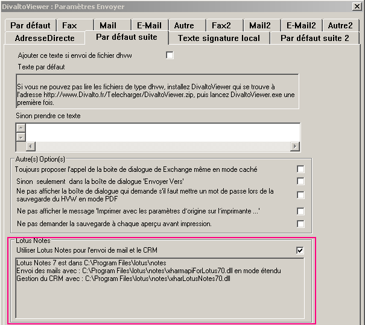
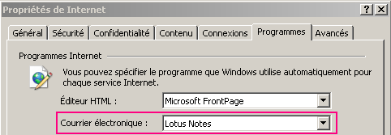

Sélectionnez le choix "Connecteur Harmony pour Lotus Notes" du menu de l’installateur d’Harmony.
L’installation active automatiquement Lotus Notes.
Vous pouvez vérifier cette activation depuis DivaltoViewer : sélectionnez le choix Paramètres Envoyer du menu Options, onglet Par défaut suite, cadre Lotus Notes :

Remarques :
Vous pouvez ici désactiver Lotus Notes en décochant la case "Utiliser Lotus Notes pour l'envoi de mail et le CRM".
Le cadre ci-dessus récapitule certaines informations concernant le connecteur :
Vous pouvez ici vérifier les numéros de version des DLL Harmony installées (qui doivent correspondre à la version de Lotus).
Des lignes supplémentaires peuvent apparaître en cas d'anomalie. Par exemple, lorsque vous n'avez pas configuré Lotus Notes au niveau des options Internet du panneau de configuration :

Opérations effectuées par l’installation :
Copie des DLL spécifiques à Harmony sur le disque.
Adaptation du ou des fichier(s) Notes.ini pour demander le chargement du connecteur Harmony à chaque lancement du client Lotus (pour plus de détails, voir la rubrique Mise à jour du fichier notes.ini).
Ajout de la clé Lotus=1 au chapitre [Mapi] de Divalto.ini.
Cette clé indique que le connecteur Lotus Notes est actif.
Nota : sous TSE ou Citrix, il faut que les utilisateurs relancent leur session pour que la modification de leur propre Divalto.ini soit effective.